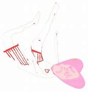

Malbec
La nueva colaboración de humbe con Reik
Nicole Uriostegui
Humbe y Reik han sorprendido al unir fuerzas en ‘Malbec’,
una canción que entrelaza a la perfección los estilos que
los caracterizan en una propuesta que incorpora nuevas
vertientes y sonidos del pop.
REM
No es solo otra canción de Humbe
Nicole Uriostegui
Humbe está de vuelta con ‘REM’, su canción más reciente.
Entre suspiros y melodías suaves, el cantante regiomontano
nos guía a través de sus sueños más profundos para encontrar
lo que más anhela.
“REM es el estado de sueño en el que el cuerpo recibe la mayor
cantidad de descanso y es donde todos llegamos en un punto de
la noche al tratar de descansar”, explica Humbe sobre el
término que le sirvió de inspiración para el nuevo tema.
Patadas de ahogados
Por fin, Humbe ft Latin Mafia
Nicole Uriostegui

Es de madrugada. Un vocho se queda varado en la libre a Cuernavaca
y hay que prender las intermitentes. Lo que para cualquiera sería
un escenario de terror para LATIN MAFIA se volvió el punto de partida
para crear su nueva canción: “Patadas de Ahogado”, un tema en el que
el trío originario de Monterrey invitó a HUMBE, productor, cantante y
compositor de la gen Z en México.
“Tenemos un vocho que seguramente han visto en redes”, narra el grupo
que, con apenas dos años de música en plataformas, ya cuenta con más
de 7.6M de oyentes mensuales en Spotify. “Un día lo teníamos que llevar
de Cuernavaca a la CDMX y se nos quedó varado. Prendimos las intermitentes
y fue cuando a Mike se le ocurrió lo que sería ‘Patadas de Ahogado’.
De hecho, son esas mismas intermitentes las que suenan en la canción”.